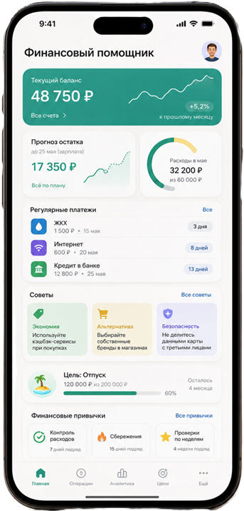

Расходы без системы
Покупки фиксируются редко, поэтому реальная картина бюджета быстро теряется.
Персональный финансовый помощник
Приложение анализирует доходы и расходы, прогнозирует остаток бюджета, предупреждает о финансовых рисках и подсказывает, как экономить без сложных таблиц.

Почему это важно
У многих людей расходы складываются из мелких покупок, подписок, комиссий, кредитных платежей и спонтанных решений. В итоге пользователь видит только итоговый минус, но не понимает, где именно бюджет начал ломаться.
Финансовый ассистент превращает хаотичные траты в понятную картину: показывает категории, предупреждает о перегрузе бюджета и предлагает конкретные шаги, которые можно выполнить прямо сегодня.
Покупки фиксируются редко, поэтому реальная картина бюджета быстро теряется.
Ассистент заранее показывает, хватит ли средств до следующего дохода.
Подписки, комиссии и импульсивные траты подсвечиваются как отдельные риски.
Приложение напоминает о подозрительных действиях и финансовой осторожности.
Возможности
Автоматическая категоризация расходов, поиск утечек бюджета и прогноз остатка средств.
Ассистент помогает копить на отпуск, технику, образование или финансовую подушку.
Подсказки по осторожному поведению, долговой нагрузке и подозрительным операциям.
Сценарии роста цен, рекомендации по экономии и более доступные альтернативы.
Как работает приложение
Пользователь добавляет доходы, расходы и цели. Приложение анализирует поток денег, собирает категории, выделяет регулярные платежи и показывает, какие действия сильнее всего влияют на бюджет.
Вместо сухих цифр ассистент дает понятные рекомендации: где сократить расходы, сколько можно отложить, какие платежи скоро придут и какие операции выглядят рискованно.

Продуктовый результат
Первая версия продукта фокусируется на главном: учет доходов и расходов, прогноз бюджета, цели накоплений, персональные советы и контроль финансовых рисков.
Сбор финансовых данных
ИИ-анализ расходов
Прогноз бюджета
Рекомендации и цели
Проверка безопасности
Внутри сервиса
Баланс, прогноз, регулярные платежи, советы и цели собраны на одном экране.
Ассистент показывает не только цифры, но и понятные действия для пользователя.
Итог
Приложение объединяет контроль бюджета, прогнозирование, цели накоплений, персональные рекомендации и безопасность в одном понятном интерфейсе.